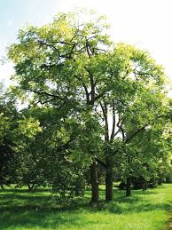
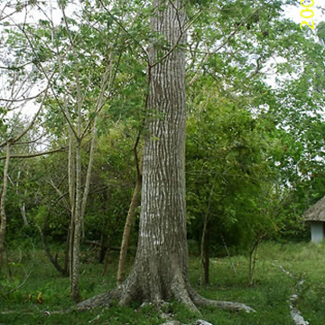
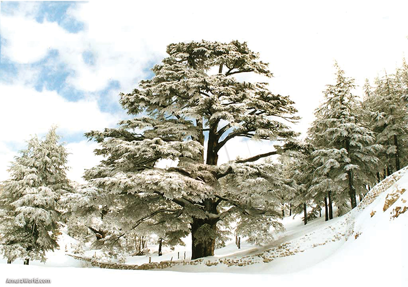

Tipos de Árboles
Tipos de Árboles Tipos de Árboles 
| INICIO | PINOS | CEDROS | ENCINOS | ROBLES |
|---|
CEDROS
Los cedros son árboles que pertenecen al género Cedrus, conocidos por su madera resistente y aromática. Son árboles con ramas horizontales y hojas en forma de agujas, y suelen crecer en regiones montañosas del hemisferio norte, como el Mediterráneo, el Himalaya y el Cáucaso. Además, los cedros tienen un valor importante en la cultura y la historia, y a menudo se usan en la construcción, la decoración y en ceremonias tradicionales.
| ¿Qué significan los cedros? | ¿Cuál es la vida de un cedro? | ¿Qué necesita un cedro para vivir? |
|---|---|---|
|  |  |  |
Tipo de árbol siempre verde de madera fragante y dura que es miembro de la familia del ciprés. |
Luego del brote de nuevas hojas, nacen las flores. Unos meses luego de la floración maduran los frutos, cuando el follaje ya se empieza a marchitar. Especie de lento crecimiento y vida larga. Se estima que los ejemplares más viejos alcanzan entre 100 y 300 años, e incluso más, de edad. | Los cedros prosperan en entornos con humedad constante, lo que les permite desarrollar raíces fuertes. Las condiciones climáticas también influyen en el crecimiento. La temperatura y la exposición a la luz solar pueden acelerar o dificultar el proceso de crecimiento. |
Nataly Esteban Erasto Grupo: 404 |
|---|